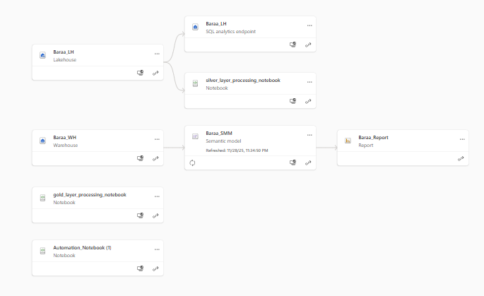

Automated Microsoft Fabric Project Setup

Overview
Microsoft Fabric developers often spend significant time manually recreating workspaces, Lakehouses, Warehouses, and pipelines—especially when working across tenants or constrained by permissions.
This project demonstrates how to automate the setup of a complete end-to-end Microsoft Fabric environment using the Fabric REST API and a Python notebook, reducing a process that typically takes days to less than 5 minutes.
The repository has been cloned by 100+ developers within the Microsoft Fabric data community.
Problem & Solution
- Problem: Rebuilding Fabric projects across tenants is repetitive, time-consuming, and error-prone.
- Solution: A fully automated deployment driven by Python and the Fabric REST API... Including automation of Fabric warehouse with python which is usually difficult to accomplish
- Outcome: Consistent, repeatable project environments provisioned in minutes instead of days.
Key Capabilities
- Automated workspace and Fabric item creation
- End-to-end project bootstrapping from a single notebook
- Repeatable setup across tenants and environments
- Reduced manual configuration and setup errors
Technical Implementation
Technologies Used
- Python for orchestration and API interaction
- Microsoft Fabric REST API
- Fabric Lakehouse and Warehouse (medallion architecture)
Who This Is For
- Fabric analytics engineers working across tenants
- Teams standardizing Fabric project onboarding
- Developers looking to automate Fabric infrastructure